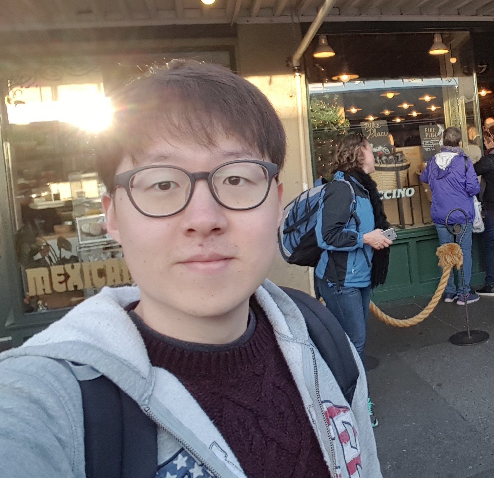

<div class="home" id="home">

    <div><a href="assets/img/profile_org.jpg" imageanchor="1"></a>

        <h3 style="margin: 0.5rem 1.5rem">Chungha Sung </h3>
        <!--<h4><span lang="ko">(성청하</span>,<span lang="ch"> 成青河</span>)</h4>--!>
        <p class="body">&nbsp;&nbsp;Research Assistant<br>
        &nbsp;&nbsp;<a href="https://www.cs.usc.edu" target="_blank">The department of Computer Science</a><br>
        &nbsp;&nbsp;<a href="https://www.usc.edu" target="_blank">University of Southern California (USC)</a></p>
    </div>
    <p style="clear:both">

    <table cellspacing="0">
    <div class="description">
&nbsp;&nbsp;
        I am currently pursuing Ph.D degree in the Department of Computer Science 
        at University of Southern California (USC) under the guidance of 
        <a href="https://sites.usc.edu/chaowang/" target="_blank">Prof. Chao Wang</a>.
        Before joining USC, I received my M.S. from <a href="https://www.vt.edu" target="_blank">Virginia Tech</a> in 2016,
        and B.S. from <a href="https://www.skku.edu" target="_blank">Sung Kyun Kwan University (SKKU)</a> 
        advised by <a href="https://cse.snu.ac.kr/en/professor/jae-wook-lee" target="_blank">Prof. Jae W. Lee</a>.<br>
    <br>
    </div>
   </table>
    <table cellspacing="0">
    <ul> <li class="ch-list1">Research interests
        <span style="font-size:0.9em; font-weight:light">
        (<a href="pub/">Publication list</a>, <a href="https://scholar.google.com/citations?user=ZCD9fDsAAAAJ&hl=en" target="_blank">Google scholar</a>)</span></li>
        <ul>
        <li class="ch-list2">Static/Dynamic program analysis to solve numerous software engineering problems</li>
        <li class="ch-list2">Contraint-based program analysis [<a href="https://chunghasung.org/pub/papers/fse16_paper.pdf" target="_blank">FSE16</a>,
                                                               <a href="https://chunghasung.org/pub/papers/ase17_paper.pdf" target="_blank">ASE17</a>,
                                                               <a href="https://chunghasung.org/pub/papers/ase2018_diff.pdf" target="_blank">ASE18</a>,
                                                               <a href="https://chunghasung.org/pub/papers/fse2019_paper.pdf" target="_blank">FSE19</a>]</li>
        <li class="ch-list2">Optimizing testing/verification for various applications such as concurrent software and event-driven programs (e.g. web/mobile applications) 
                                                              [<a href="https://chunghasung.org/pub/papers/fse16_paper.pdf" target="_blank">FSE16</a>,
                                                               <a href="https://chunghasung.org/pub/papers/ase17_paper.pdf" target="_blank">ASE17</a>,
                                                               <a href="https://chunghasung.org/pub/papers/ase2018_diff.pdf" target="_blank">ASE18</a>]</li>
        <li class="ch-list2">Software side-channel analysis/attacks/mitigations
                                                              [<a href="https://chunghasung.org/pub/papers/ase2018_canal.pdf" target="_blank">ASE-tool18</a>,
                                                              <a href="https://chunghasung.org/pub/papers/fse2019_paper.pdf" target="_blank">FSE19</a>,
                                                               <a href="https://chunghasung.org/pub/papers/ase2019_debreach.pdf" target="_blank">ASE19</a>]</li>
        <li class="ch-list2">Automatic program maintenance and repair
                                                              [<a href="https://chunghasung.org/pub/papers/icse-seip_2020.pdf" target="_blank">ICSE-SEIP20</a>]</li>        
        </ul>
    </ul>
   </table>

    <!--
    <table cellspacing="0">
    <ul> <li class="ch-list1">Brief list of publications with conferences 
        <span style="font-size:0.9em; font-weight:light">
        (<a href="pub/">Complete list</a>, <a href="https://scholar.google.com/citations?user=ZCD9fDsAAAAJ&hl=en" target="_blank">Google scholar</a>)</span></li>
        <ul>

            <li class="ch-list2">(ICSE 2020) Towards Understanding and Fixing Upstream Merge Induced Conflicts in Divergent Forks: An Industrial Case Study</li>
            <li class="ch-list2">(ASE 2019) Debreach: Mitigating Compression Side Channels via Static Analysis and Transformation</li>
            <li class="ch-list2">(FSE 2019) Mitigating Power Side Channels during Compilation</li>
            <li class="ch-list2">(ASE 2018) Datalog-based Scalable Semantic Diffing of Concurrent Programs</li>
            <li class="ch-list2">(ASE 2018) CANAL: A Cache Timing Analysis Framework via LLVM Transformation</li>
            <li class="ch-list2">(ASE 2017) Modular Verification of Interrupt-driven Software</li>
            <li class="ch-list2">(FSE 2016) Static DOM Event Analysis for Testing Web Applications</li>
        </ul>
    </ul>
   </table>
   --!>

    <ul> <li class="ch-list1">Internships</li>
        <ul>
        <li class="ch-list2">Microsoft Research, Redmond (Summer 2019)</li>
        <li class="ch-list2">MediaTek Inc., Boston (Summer 2018)</li>
        <li class="ch-list2">Microsoft Research, India (Summer 2017)</li>
        <li class="ch-list2">AhnLab Inc., Korea (Summer 2012)</li>
        </ul>
    </ul>
    <br>


</div>
